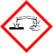
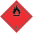
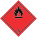

Hazard statements | Classification procedure | |
flammable liquids (Flam. Liq. 3) | H226: Flammable liquid and vapour. | On basis of test data. |
Serious eye damage/eye irritation (Eye Dam. 1) | H318: Causes serious eye damage. | Calculation method. |
STOT-single exposure (STOT SE 3) | H336: May cause drowsiness or dizziness. | Calculation method. |
Safety Data Sheet according to Regulation (EC) No. 1907/2006 (REACH) Page 1/11 Mycoplasma Off™ Revision date: 21 Aug 2024 Version: 5 Print date: 21 Aug 2024 |
Safety Data Sheet according to Regulation (EC) No. 1907/2006 (REACH) |
SECTION 1: Identification of the substance/mixture and of the company/undertaking |
Vergiftungs-Informations-Zentrale Freiburg, 24h: +49 761 19240 |
SECTION 2: Hazards identification |
Labelling according to Regulation (EC) No. 1272/2008 [CLP] Hazard pictograms:  GHS02 GHS05 GHS07 Flame Corrosion Exclamation mark Signal word: Danger |
en / DE |
Hazard statements for physical hazards | |
H226 | Flammable liquid and vapour. |
Hazard statements for health hazards | |
H318 | Causes serious eye damage. |
H336 | May cause drowsiness or dizziness. |
Precautionary statements Prevention | |
P210 | Keep away from heat, hot surfaces, sparks, open flames and other ignition sources. No smoking. |
P280 | Wear protective gloves/protective clothing and eye protection/face protection. |
Precautionary statements Response | |
P303 + P361 + P353 | IF ON SKIN (or hair): Take off immediately all contaminated clothing. Rinse skin with water [or shower]. |
P304 + P340 | IF INHALED: Remove person to fresh air and keep comfortable for breathing. |
P305 + P351 + P338 | IF IN EYES: Rinse cautiously with water for several minutes. Remove contact lenses, if present and easy to do. Continue rinsing. |

Product identifiers | Substance name Classification according to Regulation (EC) No 1272/2008 [CLP] | Concentration |
CAS No.: 71-23-8 EC No.: 200-746-9 Index No.: 603-003-00-0 REACH No.: 01-2119486761-29 | propan-1-ol Eye Dam. 1 (H318), Flam. Liq. 2 (H225), STOT SE 3 (H336) Danger Acute Toxicity Estimate ATE (oral) 8,000 mg/kg ATE (dermal) 4,032 mg/kg ATE (inhalation, vapour) > 33.8 mg/L ATE (inhalation, dust/mist) > 51.91 mg/L | 30 – < 50 weight-% |
CAS No.: 64-17-5 EC No.: 200-578-6 Index No.: 603-002-00-5 REACH No.: 01-2119457610-43-XXXX | ethanol Flam. Liq. 2 (H225) Danger Acute Toxicity Estimate ATE (oral) 10,470 mg/kg ATE (dermal) > 2,000 mg/kg ATE (inhalation, vapour) 116.9 mg/L | 10 – < 30 weight-% |
CAS No.: 34590-94-8 EC No.: 252-104-2 REACH No.: 01-2119450011-60-XXXX | Dipropylene glycol monomethyl ether Substance with a community workplace exposure limit. Acute Toxicity Estimate ATE (oral) > 5,000 mg/kg ATE (dermal) 9,510 mg/kg | 1 – ≤ 5 weight-% |
Safety Data Sheet according to Regulation (EC) No. 1907/2006 (REACH) Page 2/11 Mycoplasma Off™ Revision date: 21 Aug 2024 Version: 5 Print date: 21 Aug 2024 |
Hazard components for labelling: propan-1-ol Supplemental hazard information: none 2.3. Other hazards Adverse physicochemical effects: In case of insufficient ventilation and/or through use, explosive/highly flammable mixtures may develop. Adverse human health effects and symptoms: This product does not contain a substance that has endocrine disrupting properties with respect to humans as no components meets the criteria. |
SECTION 3: Composition/information on ingredients |
3.2. Mixtures Hazardous ingredients / Hazardous impurities / Stabilisers: Full text of H- and EUH-phrases: see section 16. |
SECTION 4: First aid measures |
4.1. Description of first aid measures General information: In case of accident or unwellness, seek medical advice immediately (show directions for use or safety data sheet if possible). Remove victim out of the danger area. Remove contaminated, saturated clothing immediately. Do not leave affected person unattended. If unconscious but breathing normally, place in recovery position and seek medical advice. Warning First aider: Pay attention to self-protection! |
en / DE |
Safety Data Sheet according to Regulation (EC) No. 1907/2006 (REACH) Page 3/11
Mycoplasma Off™ Revision date: 21 Aug 2024 Version: 5 Print date: 21 Aug 2024 |
Following inhalation: Provide fresh air. In case of respiratory tract irritation, consult a physician. Get medical advice/attention if you feel unwell. In case of skin contact: After contact with skin, wash immediately with plenty of water and soap. Take off immediately all contaminated clothing. If skin irritation or rash occurs: Get medical advice/attention. After eye contact: In case of contact with eyes flush immediately with plenty of flowing water for 10 to 15 minutes holding eyelids apart and consult an ophthalmologist. Following ingestion: Rinse mouth. Get medical advice/attention if you feel unwell. Let 1 glass of water be drunken in little sips (dilution effect). Self-protection of the first aider: Use personal protection equipment. 4.2. Most important symptoms and effects, both acute and delayed Serious eye damage/eye irritation 4.3. Indication of any immediate medical attention and special treatment needed Treat symptomatically. |
SECTION 5: Firefighting measures |
Collect contaminated fire extinguishing water separately. Do not allow entering drains or surface water. |
SECTION 6: Accidental release measures |
Personal protection equipment: Personal protection equipment: see section 8
Use appropriate container to avoid environmental contamination. |
en / DE |

Substance name | ① Long-term occupational exposure limit value ② Short-term occupational exposure limit value ③ Instantaneous value ④ Monitoring and observation processes ⑤ Remark | |
TRGS 900 (DE) from 29 Mar 2019 | ethanol CAS No.: 64-17-5 EC No.: 200-578-6 | ① 200 ppm (380 mg/m³) ② 800 ppm (1,520 mg/m³) ⑤ DFG, Y |
IOELV (EU) | Dipropylene glycol monomethyl ether CAS No.: 34590-94-8 EC No.: 252-104-2 | ① 50 ppm (308 mg/m³) ⑤ (may be absorbed through the skin) |
TRGS 900 (DE) | Dipropylene glycol monomethyl ether CAS No.: 34590-94-8 EC No.: 252-104-2 | ① 50 ppm (310 mg/m³) ② 50 ppm (310 mg/m³) ⑤ (Aerosol und Dampf) DFG, EU, 11 |
Safety Data Sheet according to Regulation (EC) No. 1907/2006 (REACH) Page 4/11 Mycoplasma Off™ Revision date: 21 Aug 2024 Version: 5 Print date: 21 Aug 2024 |
SECTION 7: Handling and storage |
No data available |
SECTION 8: Exposure controls/personal protection |
No data available
If local exhaust ventilation is not possible or not sufficient, the entire working area should be ventilated by technical means. Avoid breathing vapours and spray. |
en / DE |

Parameter | Value | at °C | ① Method ② Remark |
pH | ≈ 8 | 20 °C | |
Melting point | -114.5 °C | ① OECD 102 | |
Freezing point | No data available | ||
Initial boiling point and boiling range | No data available | ||
Flash point | 28 °C | ① DIN 51755 part 1 | |
Evaporation rate | No data available | ||
Auto-ignition temperature | No data available | ||
Upper/lower flammability or explosive limits | 2.5 – 15 Vol-% | ||
Vapour pressure | No data available | ||
Vapour density | No data available | ||
Density | 0.9 g/cm³ | 20 °C | |
Bulk density | not applicable | ||
Water solubility | completely miscible | ||
Dynamic viscosity | No data available | ||
Kinematic viscosity | No data available |
Safety Data Sheet according to Regulation (EC) No. 1907/2006 (REACH) Page 5/11 Mycoplasma Off™ Revision date: 21 Aug 2024 Version: 5 Print date: 21 Aug 2024 |
No data available |
SECTION 9: Physical and chemical properties |
No data available |
SECTION 10: Stability and reactivity |
No hazardous reaction when handled and stored according to provisions. |
en / DE |
Safety Data Sheet according to Regulation (EC) No. 1907/2006 (REACH) Page 6/11
Mycoplasma Off™ Revision date: 21 Aug 2024 Version: 5 Print date: 21 Aug 2024 |
No known hazardous decomposition products. Decomposition products in case of fire: see section 5. |
SECTION 11: Toxicological information |
No data available |
en / DE |
propan-1-ol CAS No.: 71-23-8 EC No.: 200-746-9 |
LD50 oral: 8,000mg/kg (Rat) |
LD50 dermal: 4,032mg/kg (Rabbit) |
LC50 Acute inhalation toxicity (vapour): >33.8mg/L 4h (Rat) |
LC50 Acute inhalation toxicity (dust/mist): >51.91mg/L 8h (rat) OECD Guideline 403 (Acute Inhalation Toxicity) |
ethanol CAS No.: 64-17-5 EC No.: 200-578-6 |
LD50 oral: 10,470mg/kg (Rat) OECD 401 |
LD50 dermal: >2,000mg/kg (Rat) OECD 402 |
LC50 Acute inhalation toxicity (vapour): 116.9mg/L 4h (Rat) OECD 403 |
Dipropylene glycol monomethyl ether CAS No.: 34590-94-8 EC No.: 252-104-2 |
LD50 oral: >5,000mg/kg (rat) OECD Guideline 401 (Acute Oral Toxicity) |
LD50 dermal: 9,510mg/kg (rabbit) OECD Guideline 402 (Acute Dermal Toxicity) |
Mycoplasma Off™
propan-1-ol CAS No.: 71-23-8 EC No.: 200-746-9 |
LC50: 4,555mg/L 4d (fish, Pimephales promelas) |
LC50: 4,555mg/L 4d (fish, Pimephales promelas Activated sludge) |
LC50: 4,555mg/L 4d (fish, Pimephales promelas) OECD Guideline 203 (Fish, Acute Toxicity Test) |
LC50: 1,000mg/L 2d (crustaceans, Gammarus pulex) |
EC50: >1,000mg/L (Belebtschlamm) |
EC50: 3,644mg/L 2d (fish, Daphnia magna) |
EC50: >1,000mg/L (Algae/water plant, Activated sludge) |
EC50: 9,170mg/L 2d (Algae/water plant, Raphidocelis subcapitata (previous names: Pseudokirchneriella subcapitata, Selenastrum capricornutum)) |
EC50: 3,644mg/L 2d (crustaceans, Daphnia magna) DIN 38412 Part 11, Daphnia- Short term test |
NOEC: >100mg/L 21d (Algae/water plant, Daphnia magna) |
NOEC: 1,150mg/L 2d (Algae/water plant) |
NOEC: 68.3mg/L 21d (fish, Daphnia magna) |
NOEC: 1,150mg/L 2d (Algae/water plant, Chlorella pyrenoidosa) |
ethanol CAS No.: 64-17-5 EC No.: 200-578-6 |
LC50: 12,340mg/L 2d (Daphnia magna) |
LC50: 275mg/L 3d |
LC50: 14,200mg/L 4d (fish, Pimephales promelas) US EPA method E03-05 |
LC50: 5,012mg/L 2d (crustaceans, Ceriodaphnia dubia) ASTM E729-80 |
EC50: 1,806mg/L (ceriodaphnia dubia, Chlorella vulgaris) OECD 201 |
EC50: 275mg/L 3d (Algae/water plant, Chlorella vulgaris) OECD Guideline 201 (Alga, Growth Inhibition Test) |
EC50: 675mg/L 4d (Algae/water plant, Chlorella vulgaris) OECD Guideline 201 (Alga, Growth Inhibition Test) |
EC50: 12,900mg/L 4d (fish, Pimephales promelas) US EPA method E03-05 |
NOEC: 4,432mg/L (ceriodaphnia dubia) |
NOEC: 2mg/L 10d (crustaceans, Ceriodaphnia dubia) |
Dipropylene glycol monomethyl ether CAS No.: 34590-94-8 EC No.: 252-104-2 |
LC50: >1,000mg/L 4d (fish, Poecilia reticulata) |
LC50: >1,000mg/L 2d (crustaceans, Crangon crangon) EPA OPP 72-3 (Estuarine/Marine Fish, Mollusk, or Shrimp Acute Toxicity Test) |
LC50: >1,000mg/L 3d (crustaceans, Crangon crangon) EPA OPP 72-3 (Estuarine/Marine Fish, Mollusk, or Shrimp Acute Toxicity Test) |
LC50: >1,000mg/L 4d (crustaceans, Crangon crangon) EPA OPP 72-3 (Estuarine/Marine Fish, Mollusk, or Shrimp Acute Toxicity Test) |
EC50: >969mg/L 3d (Algae/water plant, Raphidocelis subcapitata (previous names: Pseudokirchneriella subcapitata, Selenastrum capricornutum)) |
EC50: >969mg/L 4d (Algae/water plant, Raphidocelis subcapitata (previous names: Pseudokirchneriella subcapitata, Selenastrum capricornutum)) |
NOEC: 969mg/L 3d (Algae/water plant, Raphidocelis subcapitata (previous names: Pseudokirchneriella subcapitata, Selenastrum capricornutum)) |
NOEC: 969mg/L 4d (Algae/water plant, Raphidocelis subcapitata (previous names: Pseudokirchneriella subcapitata, Selenastrum capricornutum)) |
LOEC: 0.5mg/L 22d (crustaceans, Daphnia magna) |
propan-1-ol CAS No.: 71-23-8 EC No.: 200-746-9 |
Biodegradation: Yes, rapidly |
ethanol CAS No.: 64-17-5 EC No.: 200-578-6 |
Biodegradation: Yes, rapidly |
en / DE
propan-1-ol CAS No.: 71-23-8 EC No.: 200-746-9 |
Log KOW: 0.2 |
Bioconcentration factor (BCF): 0.88 |
ethanol CAS No.: 64-17-5 EC No.: 200-578-6 |
Log KOW: -0.31 |
Bioconcentration factor (BCF): 3.2 |
Dipropylene glycol monomethyl ether CAS No.: 34590-94-8 EC No.: 252-104-2 |
Log KOW: 0.004 |
propan-1-ol CAS No.: 71-23-8 EC No.: 200-746-9 |
Results of PBT and vPvB assessment: This substance does not meet the PBT/vPvB criteria of REACH, Annex XIII. |
ethanol CAS No.: 64-17-5 EC No.: 200-578-6 |
Results of PBT and vPvB assessment: This substance does not meet the PBT/vPvB criteria of REACH, Annex XIII. |
Dipropylene glycol monomethyl ether CAS No.: 34590-94-8 EC No.: 252-104-2 |
Results of PBT and vPvB assessment: This substance does not meet the PBT/vPvB criteria of REACH, Annex XIII. |
Inland waterway craft (ADN) | Sea transport (IMDG) | Air transport (ICAO-TI / IATA-DGR) | |
14.1. UN number or ID number | |||
UN 1987 | UN 1987 | UN 1987 | UN 1987 |
14.2. UN proper shipping name | |||
ALCOHOLS, N.O.S. (propan-1- ol, ethanol) | ALCOHOLS, N.O.S. (propan-1- ol, ethanol) | ALCOHOLS, N.O.S. (propan-1- ol, ethanol) | ALCOHOLS, N.O.S. (propan-1- ol, ethanol) |
14.3. Transport hazard class(es) | |||
3 | 3 | 3 | 3 |
14.4. Packing group | |||
III | III | III | III |

 

Safety Data Sheet according to Regulation (EC) No. 1907/2006 (REACH) Page 8/11 Mycoplasma Off™ Revision date: 21 Aug 2024 Version: 5 Print date: 21 Aug 2024 |
No data available |
SECTION 13: Disposal considerations |
Waste codes/waste designations according to EWC/AVV Waste code product 07 06 04 * other organic solvents, washing liquids and mother liquors *: Evidence for disposal must be provided. Waste code packaging 15 01 02 Plastic packaging Waste treatment options Appropriate disposal / Product: Consult the appropriate local waste disposal expert about waste disposal. Appropriate disposal / Package: Completely emptied packages can be recycled. |
SECTION 14: Transport information |
en / DE |
Land transport (ADR/RID) | Inland waterway craft (ADN) | Sea transport (IMDG) | Air transport (ICAO-TI / IATA-DGR) |
14.5. Environmental hazards | |||
No | No | No | No |
14.6. Special precautions for user | |||
Special Provisions: 274 | 601 Limited quantity (LQ): 5 L Excepted Quantities (EQ): E1 Hazard identification number (Kemler No.): 30 Classification code: F1 Tunnel restriction code: (D/E) | Special Provisions: 274 | 601 Limited quantity (LQ): 5 L Excepted Quantities (EQ): E1 Classification code: F1 | Special Provisions: 223 | 274 Limited quantity (LQ): 5 L Excepted Quantities (EQ): E1 EmS-No.: F-E, S-D | Special Provisions: A3 | A180 Limited quantity (LQ): Y344 Excepted Quantities (EQ): E1 |

Details of the supplier of the safety data sheet | |
2.2. | Label elements |
3.2. | Mixtures |
Safety Data Sheet according to Regulation (EC) No. 1907/2006 (REACH) Page 9/11 Mycoplasma Off™ Revision date: 21 Aug 2024 Version: 5 Print date: 21 Aug 2024 |
14.7. Maritime transport in bulk according to IMO instruments No transport as bulk according to IBC Code. |
SECTION 15: Regulatory information |
22 JArbSchG., 4 MuSchRiV., 5 MuSchRiV., Betriebssicherheitsverordnung (BetrSichV) Störfallverordnung (12. BImschV) for substances contained in the product: Hazard categories:
for substances possibly developing during an incident: This product is not assigned to a hazard category. Betriebssicherheitsverordnung (BetrSichV) leichtentzündlich Water hazard class WGK: 1 - slightly hazardous to water Berufsgenossenschaftliche Vorschriften (DGUV-Vorschriften) Berufsgenossenschaftliche Vorschriften (DGUV-Vorschriften) Other regulations, restrictions and prohibition regulations Hazardous Substances Ordinance (GefStoffV) 15.2. Chemical Safety Assessment For this substance a chemical safety assessment has not been carried out. |
SECTION 16: Other information |
16.1. Indication of changes |
en / DE |
Mycoplasma Off™
4.1. | Description of first aid measures |
7.1. | Precautions for safe handling |
8.1. | Control parameters |
9.1. | Information on basic physical and chemical properties |
14.3. | Transport hazard class(es) |
15.1. | Safety, health and environmental regulations/legislation specific for the substance or mixture |
16.1. | Indication of changes |
16.5. | List of relevant hazard statements and/or precautionary statements from sections 2 to 15 |
ACGIH American Conference of Governmental Industrial Hygienists
ADN European Agreement concerning the International Carriage of Dangerous Goods by Inland Waterways ADR European Agreement concerning the International Carriage of Dangerous Goods by Road
ASTM American Society for Testing and Materials BCF Bioconcentration Factor
CAS Chemical Abstracts Service
CLP Classification, Labelling and Packaging
DIN German Institute for Standardization / German Industrial Standard DNEL derived no-effect level
EC50 Effective Concentration 50% ECHA European Chemicals Agency EN European Standard
ES Exposure scenario
EWC European Waste Catalogue
GHS Globally Harmonized System of Classification and Labelling of Chemicals IBC Intermediate Bulk Container
ICAO International Civil Aviation Organization IMDG International Maritime Dangerous Goods IMO International Maritime Organization
ISO International Standards Organisation LC50 Lethal (fatal) Concentration 50% LD50 Lethal (fatal) Dose 50%
MAK Maximum concentration in the workplace air (CH) NFPA National Fire Protection Association
NIOSH National Institute for Occupational Safety & Health NOEC No Observed Effect Concentration
OECD Organisation for Economic Cooperation and Development OEL Threshold Limit Value
OSHA Occupational Safety & Health Administration PBT persistent and bioaccumulative and toxic
PC Product category
PNEC Predicted No Effect Concentration
REACH Registration, Evaluation and Authorization of Chemicals RID Dangerous goods regulations for transport by rail
SU use category
TRGS Technische Regeln für Gefahrstoffe UN United Nations
For abbreviations and acronyms, see: ECHA Guidance on information requirements and chemical safety assessment, chapter R.20 (Table of terms and abbreviations).
TRGS 510, TRGS 525, TRGS 900, Safety data sheets for the ingredients , 1907/2006 REACH, 1272/2008 CLP GHS
Substance name | Type | source of supply |
propan-1-ol CAS No.: 71-23-8 EC No.: 200-746-9 | LC50 Acute inhalation toxicity (dust/ mist); LC50; EC50; NOEC | Source: European Chemicals Agency, http://echa.europa.eu/ |
Dipropylene glycol monomethyl ether CAS No.: 34590-94-8 EC No.: 252-104-2 | LD50 oral; LD50 dermal; LC50; EC50; NOEC; LOEC | Source: European Chemicals Agency, http://echa.europa.eu/ |
ethanol CAS No.: 64-17-5 EC No.: 200-578-6 | LC50; EC50; NOEC | Source: European Chemicals Agency, http://echa.europa.eu/ |

Mycoplasma Off™
Hazard classes and hazard categories | Hazard statements | Classification procedure |
flammable liquids (Flam. Liq. 3) | H226: Flammable liquid and vapour. | On basis of test data. |
Serious eye damage/eye irritation (Eye Dam. 1) | H318: Causes serious eye damage. | Calculation method. |
STOT-single exposure (STOT SE 3) | H336: May cause drowsiness or dizziness. | Calculation method. |
Hazard statements | |
H225 | Highly flammable liquid and vapour. |
H318 | Causes serious eye damage. |
H336 | May cause drowsiness or dizziness. |
No data available
This data sheet was created in accordance with EU regulation (EC) No. 1907/2006 (REACH).
The information is based on the level of knowledge and experience on the date of issue, it do not have the importance of assured properties. The information may not be changed or transferred to other products. Reproduction in the unchanged state is permitted.
* Data changed compared with the previous version.